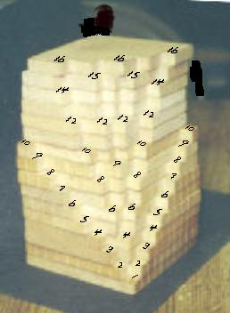

The 3D Multiplication or TimesTables!

Each of these layers were cut out of wood (the old Dienes blocks) by Don, about 35 years ago. He has kept it around for his students to build up the layers, then look at the result and find patterns in it. His camera wasn't good at close shots, so the numbers on the layers weren't visible in the scan; he therefore drew and superimposed the numbers in his paint program.
To order
Don's materials
Mathman home